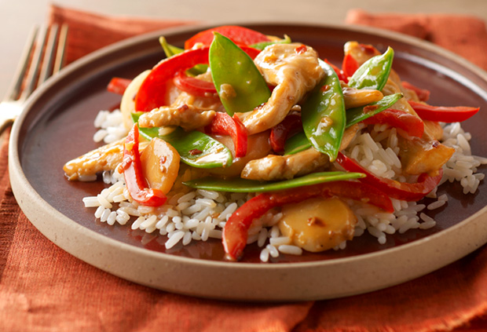

Ingredients
1.Chicken (boneless skinless) - 1(cut into small pieces)
2.Ginger-garlic paste - 1tbsp
3.gram masala - 1tsp
4.corn flour - 2tsp
5.chilli pwd - 2tbsp
6.turmeric pwd - 1tsp
7.fennel pwd - 1 1/2 tsp
8.lemon juice - 2tsp
9.salt- as per taste.
10.red food color - few pinch
11.oil- 3tbsp
12.Bell pepper - 1 big
13.Onion - 1 medium
Method
1. Mix well the first 10 ingredients. Let it marinate for 1 hr.
2. Cut the bell pepper and onion into big chuncks and keep aside.
3. In a pan put the oil and stir fry the chicken for 7-10 minutes until the chicken is cooked.
4. Remove the chicken pieces or move it to the side and stir fry the veggies in the same oil.
5. Veggies should be cooked but crunchy, so don't over cook it.
6. Now toss everything together and serve.
7. This goes very well with rice, pulao, chappatti or bread for sandwiches.